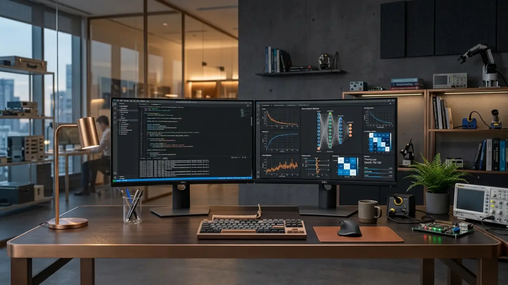
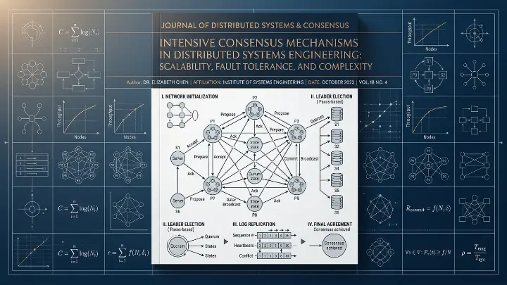
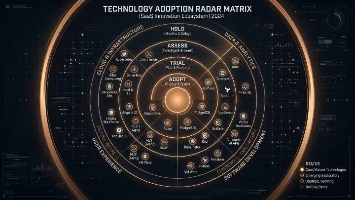

Scaling Kubernetes Fleets to 10M Concurrent Transactions
Lessons learned handling high-concurrency event bursts with automated horizontal pod autoscaling and mesh routing.
Read Dispatchchevron_right
Research & Engineering Essays
In-depth technical papers authored by our principal architects, dissecting distributed consensus, post-quantum cryptography, agent swarms, and low-latency cloud topologies.
For a decade, cloud developers accepted data inconsistencies under the banner of high availability. We present mathematical proofs and benchmark data demonstrating how Spanner-style TrueTime and Raft consensus are now viable at sub-10ms latencies worldwide.

Lessons learned handling high-concurrency event bursts with automated horizontal pod autoscaling and mesh routing.
Read Dispatchchevron_right
Practical governance frameworks for deploying multi-agent LLM teams without risking compliance exposure.
Read Dispatchchevron_right
A pragmatic transition playbook for upgrading TLS ciphers, key exchanges, and database vaults today.
Read Dispatchchevron_right
Why modern multi-tenant architectures are shifting away from HTTP JSON endpoints toward bi-directional protocol buffers.
Read Dispatchchevron_right
How OpenTelemetry eBPF probes eliminate monitoring observer effects in high-throughput transactional environments.
Read Dispatchchevron_right
Designing interfaces where human staff orchestrate, review, and verify autonomous code generation agents safely.
Read Dispatchchevron_rightFormal Specifications & Whitepapers
Peer-reviewed architectural dispatches featuring formal TLA+ mathematical specifications, empirical network benchmarks, and open-source implementation guides authored by our systems architects.

Mathematical formalization of speculative quorum consensus eliminating round-trip latency overhead across 12 geographically dispersed availability zones.

Our empirical assessment of emerging cloud infrastructure tools—from eBPF service meshes and WebAssembly isolates to Rust kernels and vector indexing engines.
Audio Debriefs & Deep Dives
Unfiltered conversations between our distributed systems engineers and leading researchers. Zero marketing rhetoric—pure kernel optimization, memory safety, and high-concurrency disaster postmortems.
Featuring Dr. Shobitha K. (Principal Systems Architect) and Marcus Chen (Cloud Infrastructure Lead). Dissecting socket layer bypass, CPU overhead elimination, and transparent zero-trust observability.